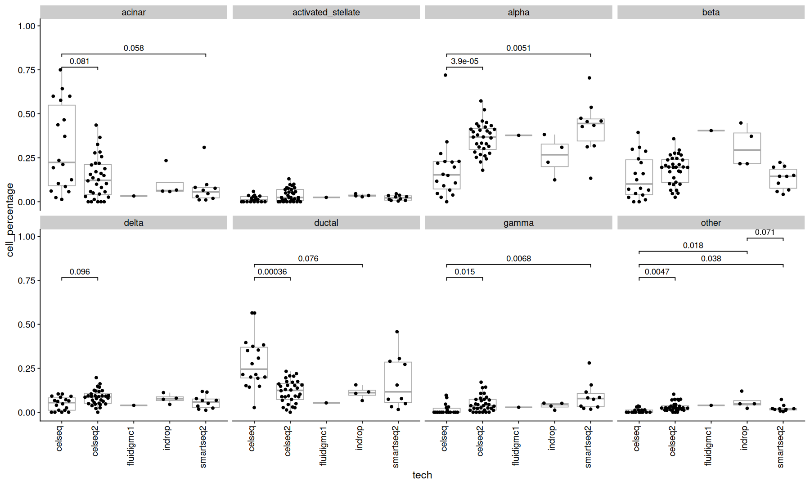
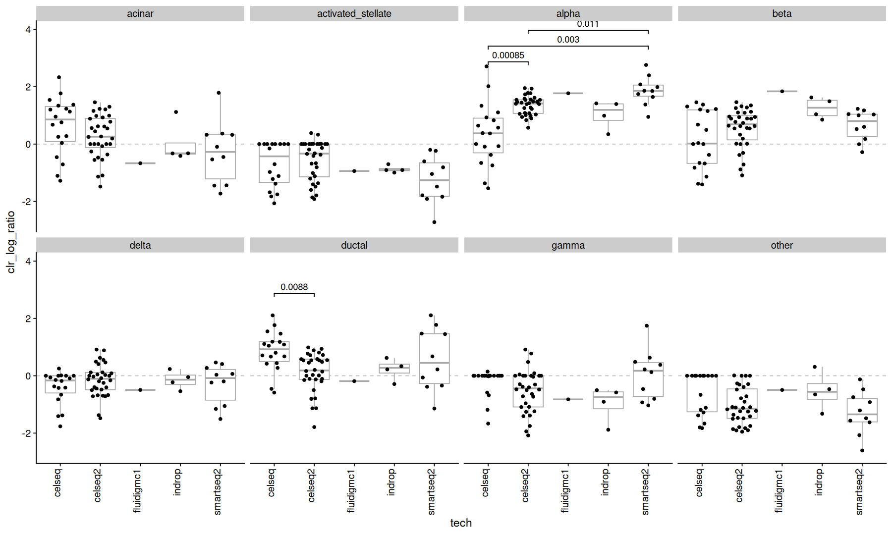
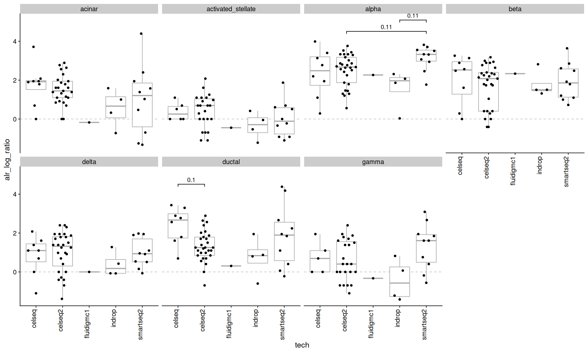

suppressPackageStartupMessages({
library(Seurat)
library(SeuratData)
library(tidyverse)
library(pheatmap)
library(RColorBrewer)
library(ggbeeswarm)
library(cowplot)
library(ggcompare)
library(compositions)
library(DirichletReg)
})
theme_set(theme_cowplot())
options(repr.plot.width=15, repr.plot.height=9, width=120)
Compositional data difference test#
data#
panc8 <- suppressMessages(LoadData("panc8"))
panc8
Warning message:
"Assay RNA changing from Assay to Assay"
Warning message:
"Assay RNA changing from Assay to Assay5"
An object of class Seurat
34363 features across 14890 samples within 1 assay
Active assay: RNA (34363 features, 0 variable features)
2 layers present: counts, data
panc8@meta.data |>
head()
| orig.ident | nCount_RNA | nFeature_RNA | tech | replicate | assigned_cluster | celltype | dataset | |
|---|---|---|---|---|---|---|---|---|
| <chr> | <dbl> | <int> | <chr> | <chr> | <chr> | <chr> | <chr> | |
| D101_5 | D101 | 4615.810 | 1986 | celseq | celseq | NA | gamma | celseq |
| D101_7 | D101 | 29001.563 | 4209 | celseq | celseq | NA | acinar | celseq |
| D101_10 | D101 | 6707.857 | 2408 | celseq | celseq | NA | alpha | celseq |
| D101_13 | D101 | 8797.224 | 2964 | celseq | celseq | NA | delta | celseq |
| D101_14 | D101 | 5032.558 | 2264 | celseq | celseq | NA | beta | celseq |
| D101_17 | D101 | 13474.866 | 3982 | celseq | celseq | NA | ductal | celseq |
metadata <-
panc8@meta.data |>
distinct(orig.ident, tech) |>
as_tibble()
head(metadata)
| orig.ident | tech |
|---|---|
| <chr> | <chr> |
| D101 | celseq |
| D102 | celseq |
| D10631 | celseq |
| D1713 | celseq |
| D172444 | celseq |
| D17All1 | celseq |
Counts#
This is a pancreatic single cell dataset consisting of 65 samples, 13 different cell types, measured with 5 different techniques.
Here, we will ignore the gene expression, and just look at the cell composition of each sample/tech.
panc8@meta.data |>
count(orig.ident, celltype, tech) |>
ggplot(aes(y=orig.ident, x=n, fill=celltype)) +
geom_col() +
labs(x='# of cells') +
facet_wrap(~tech, scales='free') +
coord_cartesian(expand=0)
{kind=link}
Counts are the simplest way to look at the data.
However, differences in the total number of cells between samples and techniques aren’t relevant to us.
ncells_mtx <-
panc8@meta.data |>
# I am combining celltypes with low amount of cells into "other"
# this is just for illustration purposes
mutate(ct2 = ifelse(celltype %in% c('epsilon','schwann','mast','macrophage','quiescent_stellate','endothelial'), 'other', celltype)) |>
count(orig.ident, ct2) |>
pivot_wider(names_from = ct2, values_from = n, values_fill = 0) |>
column_to_rownames('orig.ident')
ncells_mtx[1:5,]; sum(ncells_mtx)
| acinar | activated_stellate | alpha | beta | delta | ductal | gamma | other | |
|---|---|---|---|---|---|---|---|---|
| <int> | <int> | <int> | <int> | <int> | <int> | <int> | <int> | |
| AZ | 4 | 1 | 28 | 12 | 7 | 3 | 5 | 1 |
| D101 | 6 | 1 | 7 | 5 | 2 | 6 | 3 | 1 |
| D102 | 7 | 0 | 3 | 13 | 3 | 5 | 1 | 1 |
| D10631 | 14 | 1 | 5 | 0 | 0 | 12 | 0 | 0 |
| D1713 | 20 | 5 | 4 | 4 | 1 | 48 | 0 | 3 |
colSums(ncells_mtx)
- acinar
- 1864
- activated_stellate
- 474
- alpha
- 4615
- beta
- 3679
- delta
- 1013
- ductal
- 1954
- gamma
- 625
- other
- 666
Percentages#
Percentages uses the sum of the cells in each sample as the normalizing denominator, so that each row will sum to 1.
The “acomp” function is part of the compositions package, and does this normalization for us.
summary(rowSums(acomp(ncells_mtx)))
Min. 1st Qu. Median Mean 3rd Qu. Max.
1 1 1 1 1 1
color_p = colorRampPalette(rev(brewer.pal('Spectral', n=11)))(100)
acomp(ncells_mtx) |>
pheatmap(
color=color_p,
clustering_method='ward.D2',
clustering_disttance_rows='canberra',
clustering_disttance_cols='canberra',
annotation_row=column_to_rownames(metadata, 'orig.ident'),
border_color=NA
)
{kind=link}
Difference test#
To compare the proportions between cell types, we can use a statistical test.
comparisons <- combn(unique(metadata$tech), 2, simplify = FALSE)
test_func <- function(...) {
r = wilcox.test(..., exact=FALSE)
list(p.value=r$p.value, method='wilcox.test')
}
acomp(ncells_mtx) |>
as.data.frame() |>
rownames_to_column('orig.ident') |>
pivot_longer(names_to = 'celltype', values_to = 'cell_percentage', cols=-orig.ident) |>
inner_join(metadata, by='orig.ident') |>
ggplot(aes(x=tech, y=cell_percentage)) +
geom_boxplot(color='darkgray', outlier.shape = NA) +
geom_quasirandom() +
stat_compare(comparisons = comparisons, correction = 'fdr', cutoff=0.1, panel_indep = TRUE, method=test_func) +
theme(axis.text.x=element_text(angle=90, vjust=0, hjust=1)) +
facet_wrap(~celltype, ncol=4)
Warning message:
"Removed 67 rows containing missing values or values outside the scale range (`geom_bracket()`)."
{kind=link}

Many cell types show significant pvalues, but since the cell types are parts of a whole, its difficult to attribute this change to a specific cell type.
clr transform#
The clr transform uses the geometric mean of the subsets as the denominator.
the clr() function is also part of the compositions package.
acomp(ncells_mtx) |>
clr() |>
as.data.frame() |>
rownames_to_column('orig.ident') |>
pivot_longer(names_to = 'celltype', values_to = 'clr_log_ratio', cols=-orig.ident) |>
inner_join(metadata, by='orig.ident') |>
ggplot(aes(x=tech, y=clr_log_ratio)) +
geom_hline(yintercept=0, color='gray', linetype=2) +
geom_boxplot(color='darkgray', outlier.shape = NA) +
geom_quasirandom() +
stat_compare(comparisons = comparisons, correction = 'fdr', cutoff=0.1, panel_indep=TRUE, method=test_func) +
theme(axis.text.x=element_text(angle=90, vjust=0, hjust=1)) +
facet_wrap(~celltype, ncol=4)
Warning message:
"Removed 76 rows containing missing values or values outside the scale range (`geom_bracket()`)."
{kind=link}

notice how many of the significant pvalues disappeared.
alr transform#
The alr transform uses a specified subset as the denominator, here the cell type “other” was used.
acomp(ncells_mtx) |>
alr(ivar='other') |> # using celltype 'other' as the denominator
as.data.frame() |>
rownames_to_column('orig.ident') |>
pivot_longer(names_to = 'celltype', values_to = 'alr_log_ratio', cols=-orig.ident) |>
inner_join(metadata, by='orig.ident') |>
ggplot(aes(x=tech, y=alr_log_ratio)) +
geom_hline(yintercept=0, color='gray', linetype=2) +
geom_boxplot(color='darkgray', outlier.shape = NA) +
geom_quasirandom() +
stat_compare(comparisons = comparisons, correction = 'fdr', cutoff=0.2, panel_indep = TRUE, method=test_func) +
theme(axis.text.x=element_text(angle=90, vjust=0, hjust=1)) +
facet_wrap(~celltype, ncol=4)
Warning message:
"Removed 113 rows containing non-finite outside the scale range (`stat_boxplot()`)."
Warning message:
"Removed 113 rows containing non-finite outside the scale range (`stat_compare()`)."
Warning message:
"Removed 26 rows containing missing values or values outside the scale range (`position_quasirandom()`)."
Warning message:
"Removed 87 rows containing missing values or values outside the scale range (`geom_point()`)."
Warning message:
"Removed 67 rows containing missing values or values outside the scale range (`geom_bracket()`)."
{kind=link}

No cell types show significant (<0.1) pvalues here.
but remember to think carefully about which subset to use as the denominator.
Dirichlet regression#
The Dirichlet distribution models the probability of a multinomial random variable that sums to 1.
It provides an alternative to log-ratio regression for the modeling of compositional data.
meta <- filter(metadata, tech != 'fluidigmc1') # remove outlier
z <- ncells_mtx[meta$orig.ident,]
z <- z/rowSums(z)
all(rownames(z) == meta$orig.ident) # make sure its in the same order
dr <- DR_data(z)
summary(rowSums(dr))
Warning message in DR_data(z):
"some entries are 0 or 1 => transformation forced"
Min. 1st Qu. Median Mean 3rd Qu. Max.
1 1 1 1 1 1
Note that the Dirichlet distribution can’t model zeroes or ones, so a transformation was applied in these cases.
reg <- DirichReg(dr ~ tech - 1, meta)
reg
Call:
DirichReg(formula = dr ~ tech - 1, data = meta)
using the common parametrization
Log-likelihood: 771.9 on 32 df (105 BFGS + 1 NR Iterations)
-----------------------------------------
Coefficients for variable no. 1: acinar
techcelseq techcelseq2 techindrop techsmartseq2
0.6371 0.3604 1.4701 0.2580
-----------------------------------------
Coefficients for variable no. 2: activated_stellate
techcelseq techcelseq2 techindrop techsmartseq2
-0.9922 -0.3468 0.7442 -0.2810
-----------------------------------------
Coefficients for variable no. 3: alpha
techcelseq techcelseq2 techindrop techsmartseq2
0.2472 1.7536 2.4029 1.9901
-----------------------------------------
Coefficients for variable no. 4: beta
techcelseq techcelseq2 techindrop techsmartseq2
-0.04158 1.05837 2.60706 0.92925
-----------------------------------------
Coefficients for variable no. 5: delta
techcelseq techcelseq2 techindrop techsmartseq2
-0.5621 0.4265 1.3318 0.2516
-----------------------------------------
Coefficients for variable no. 6: ductal
techcelseq techcelseq2 techindrop techsmartseq2
0.8086 0.6040 1.6510 0.8798
-----------------------------------------
Coefficients for variable no. 7: gamma
techcelseq techcelseq2 techindrop techsmartseq2
-1.1218 -0.1968 0.6864 0.4714
-----------------------------------------
Coefficients for variable no. 8: other
techcelseq techcelseq2 techindrop techsmartseq2
-1.1189 -0.2716 1.0149 -0.2910
-----------------------------------------
tidy_dr <- function(dr_reg, exp=FALSE) {
w = confint(dr_reg, exp=exp)
map_df(1:length(w$coefficients), function(i) {
if(exp) {
cc <- base::exp(w$coefficients[[i]])
} else {
cc <- w$coefficients[[i]]
}
as.data.frame(w$ci[[1]][[i]]) |>
rownames_to_column('term') |>
rename(ci.low=V1, ci.high=V2) |>
mutate(
subset=names(w$coefficients)[[i]]
) |>
inner_join(as_tibble(cc,rownames = 'term'), by='term')
})
}
tidy_dr(reg, exp=FALSE) |>
mutate(term=gsub('tech','', term)) |>
ggplot(aes(x=term, y=value)) +
geom_hline(yintercept=0, color='darkgray') +
geom_point() +
geom_pointrange(aes(ymin=ci.low, ymax=ci.high)) +
facet_wrap(~subset, ncol=4) +
labs(y='regression coefficients')
{kind=link}
Further reading#
https://en.wikipedia.org/wiki/Compositional_data
https://en.wikipedia.org/wiki/Dirichlet_distribution
http://www.stat.boogaart.de/compositions/
http://www.csam.or.kr/journal/view.html?doi=10.29220/CSAM.2022.29.4.453
https://ijbnpa.biomedcentral.com/articles/10.1186/s12966-018-0685-1